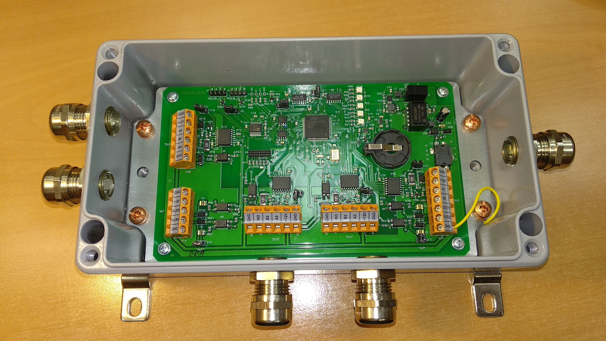
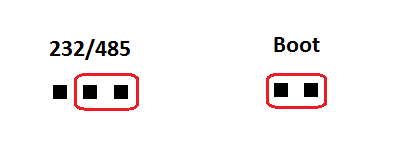
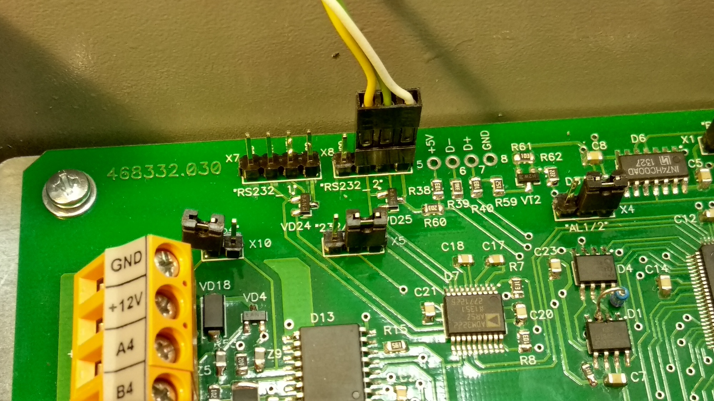
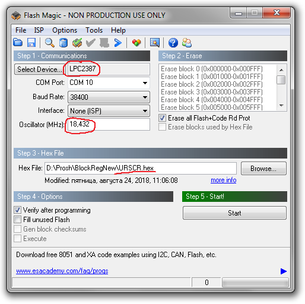
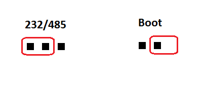
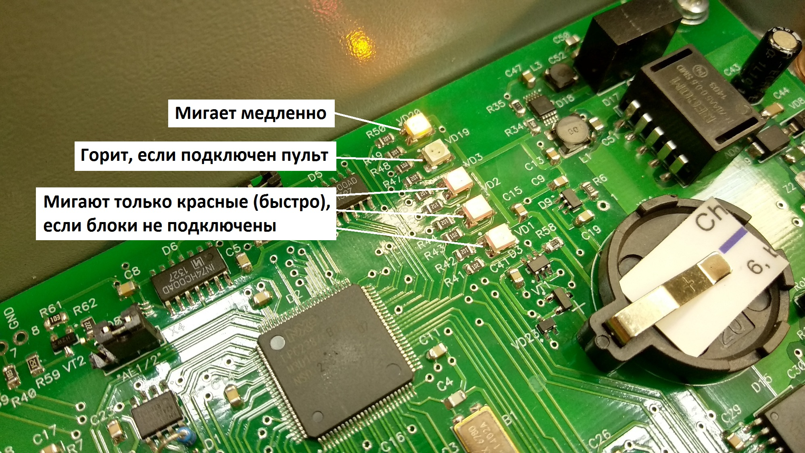
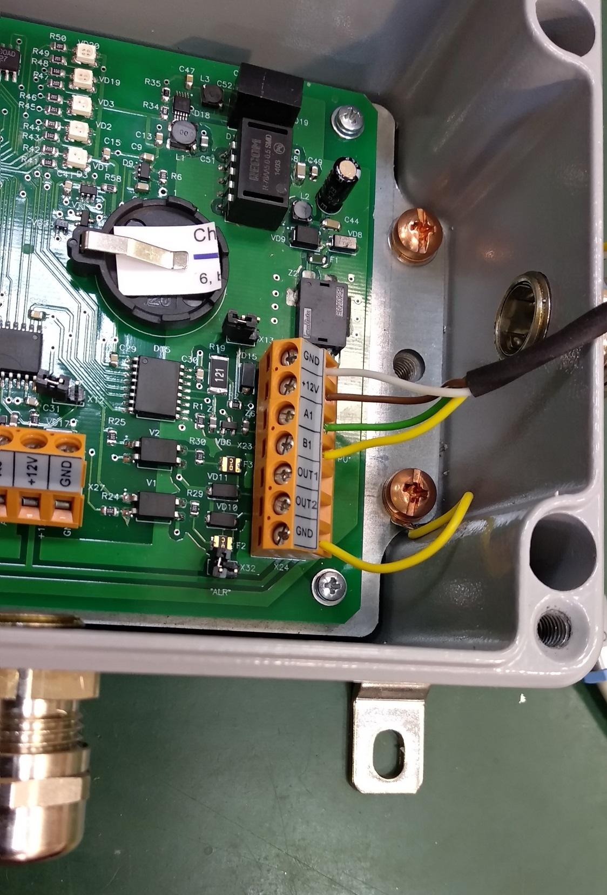
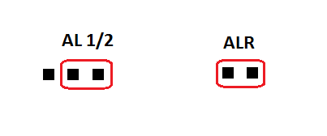

ДРГ. Блок регистрации. Прошивка.

- Устройства сигнализации в составе ДРГ прошиваются специальной ДРГ прошивкой: ___PPP11scr.A03
- Пульт управления в составе ДРГ прошиваются специальной ДРГ прошивкой: __Pult900LSCR.hex
- Батарейка не нужна
- Переставить перемычки 
- Подсоединить кабель RS-232 к X8 
- Подать питание 12V на "PU"
- Запустить программу "FlashMagic"
- Выбрать контроллер NXP LPC2387, частота 18,432 МГц
- Прошивка: URSCR.hex 
- Чтобы пульт работал с БР, пульт должен быть прошит SCR пршивкой
- Выбрать тип блока (БДКГ-25, скорее всего)
- После прошивки вернуть перемычки, как было 
- После прошивки: 
{kind=link}
Настройка БР
- К компу подключается через разъем "PU" к USB-COM адаптеру 
- Программа "SRK board"
- Выбрать порт
- Вкладка БДКГ-25
- Соединить
- Register device → Read
- Connection & Device types → Read — покажет, какие типы блоков подключаются (в этот момент они не обязаны быть подключенными). При подключении к БР блоки получают адрес из этих ячеек
- При подключениик БР блоки получают адреса из этих ячеек
- Settings → Read. Покажет, какой тип логики (регистрации) используется (обычно 2 из 3)
- Даже при выборе логики работы Не от джамперов (например 2 из 3) всё равно ставить перемычки 
Не обязательно подключать блок детектирования с адресом к конкретному разъему "DU1"
(или "DU2"...),
БР сам при необходимости переопределит, как надо
- Если подключить блоки другими адресами, БР перезапишет адреса, какие ему (БР-у) нужны
- Есть вариант "jumpers", т.е. управлять не програмно, а аппаратно, но Николаев говорит нет, ставить 2 из 3 (т.е. програмно)